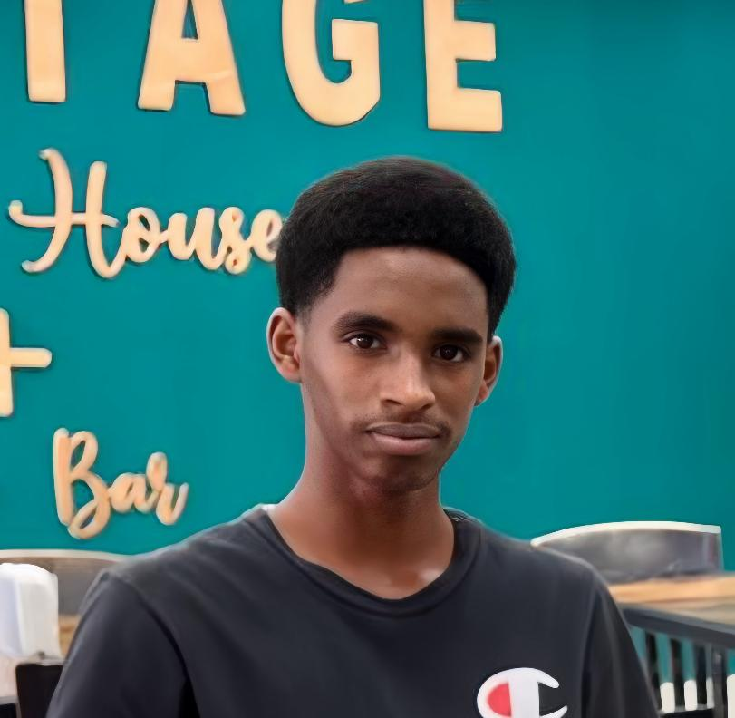

About Me

My name is Tephaune Frazer. As a dedicated and tech-savvy 16-year-old, I am passionate about pursuing an Associate Degree in
Information Technology to deepen my understanding of computer systems, programming, and digital innovation. My ambition stems
from a strong interest in technology and problem-solving, which I have developed through hands-on experience with coding and
IT-related projects. I am eager to build a career in this fast-paced, ever-evolving field, where I can combine my creativity
and technical skills to contribute to meaningful technological advancements. By earning this degree, I aim to lay a solid
foundation for future growth and opportunities in the tech industry.